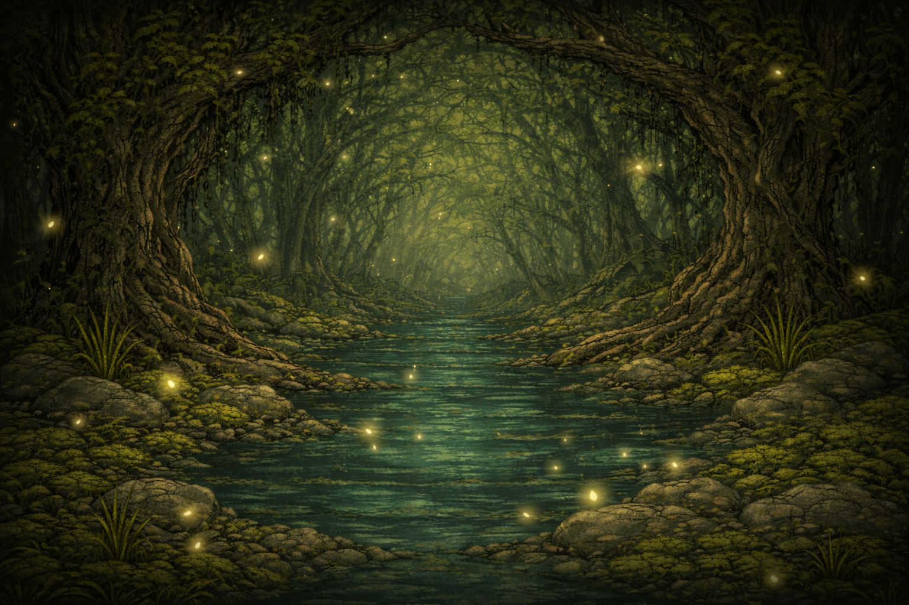
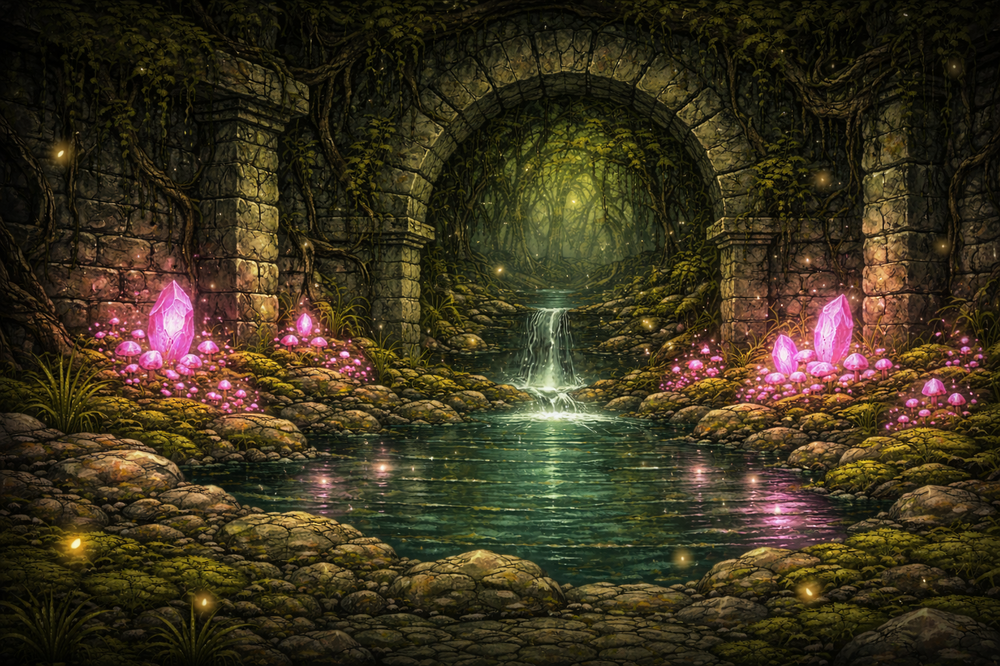
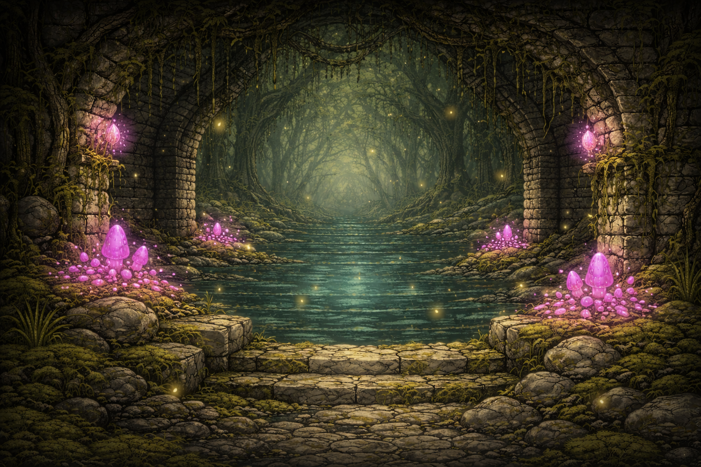
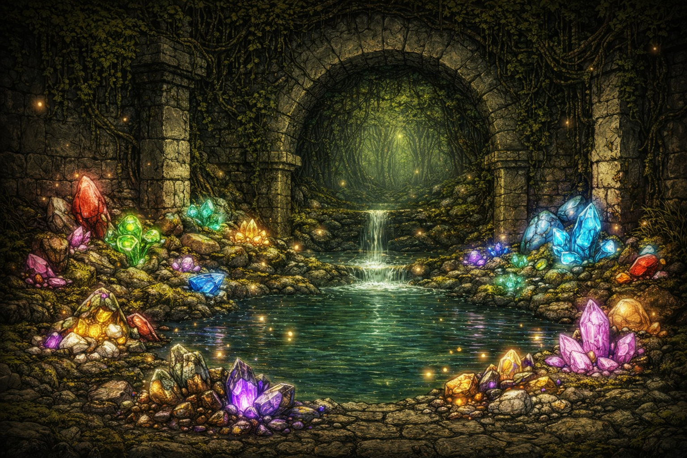
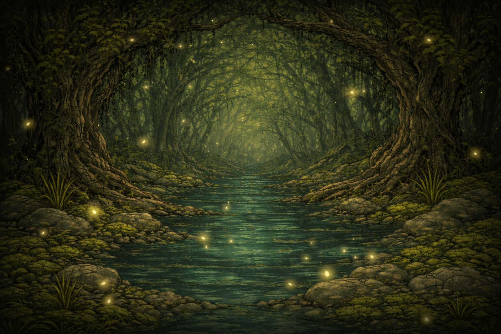
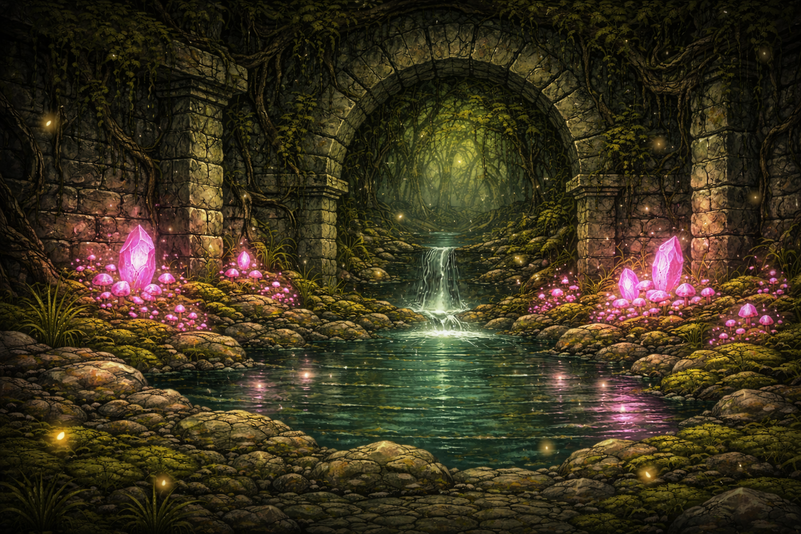
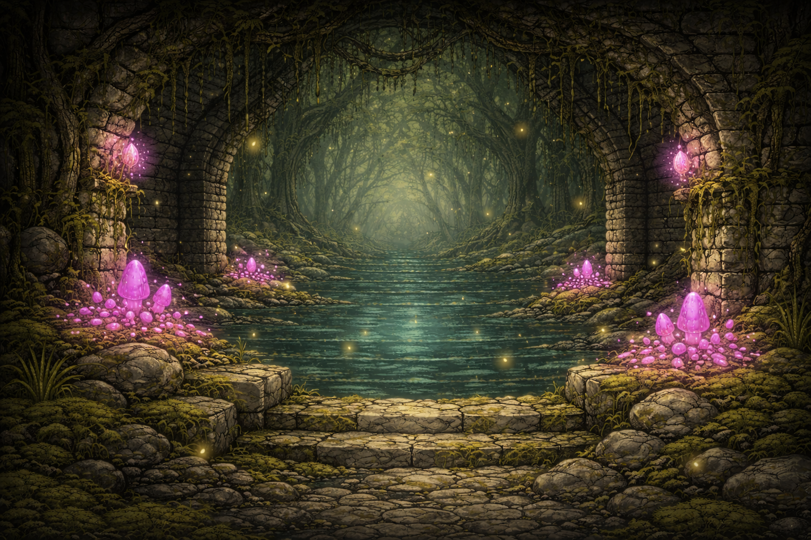
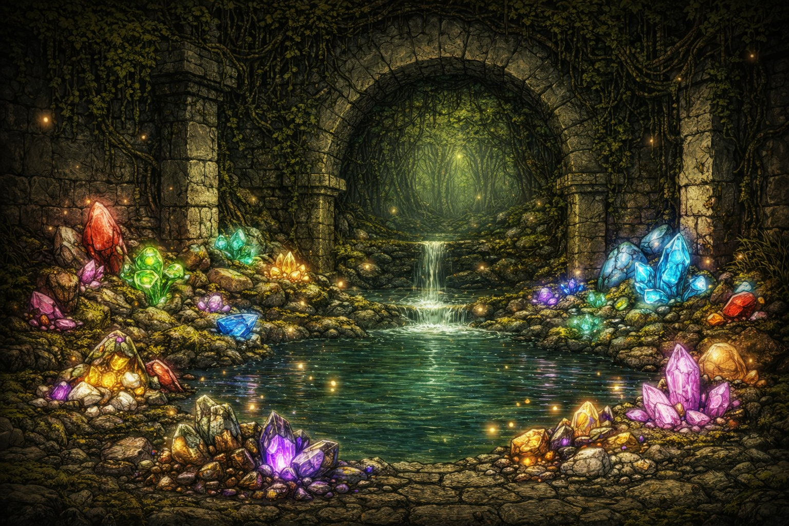

Project Overview
The Verdant Paths is a roguelike focused on procedural systems, exploration, and survival. You play as a wandering wizard navigating endless, shifting stone paths overgrown with moss, mushrooms, and crystalline growths.
Food is scarce. Magic is unstable. To survive, you must scavenge, mine arcane gems, and use their power wisely as the paths grow longer, stranger, and more dangerous.
Creative Direction (Very Flexible)
This project is intentionally open-ended. While a few keywords anchor the theme, the visual identity is largely up to you.
- Wizard (staff-based, idle animations)
- Mushroom / fungal elements
- Crystals & magical ores
- Ancient stone paths & ruins
Color palette, costume design, spell effects — all are open for interpretation. Whatever you create here will heavily influence the final tone of the game.
The working title is The Verdant Paths, but even that is flexible — as long as the name hints at winding trails, pathways, and endless progression.
Core Pitches
Pitch 1:
You are a wandering wizard trapped on the Verdant Paths — endless, shifting stone trails overrun by mushrooms and crystal growths. To survive, you must gather food and mine magical gems that power your spells before the paths claim you.
Pitch 2:
A lone wizard walks the Verdant Paths — ancient stone routes that twist endlessly through moss, fungus, and crystal veins. Food is scarce. Magic is unstable. Survival depends on how wisely you use what the paths provide.
Pitch 3:
No one remembers who built the Verdant Paths. Stone corridors stretch forever, choked with moss and glowing fungi. You survive by scavenging food and siphoning power from raw gems — but the paths never end.
What We Need
Environment Sprite Sheets
Medium difficulty · High importance · Low workload
- Tileable & seamless
- Unity-friendly slicing (or pre-sliced)
- Swampy / grassy / mossy stone environments
- Ores & decorative overlays
 







Character Sprite Sheets
High difficulty · Very high importance · High workload
- 1 Player Wizard
- 2 Enemies (Elite / Boss optional)
- Idle, Walk, Attack, Hurt
- Left-facing required (others later)
UI / HUD Elements
Medium difficulty · Very high importance · Minimal workload
- Health bars
- Food / gems / gold indicators
- Menus & frames
- Future inventory UI
Collectibles & Decor
Medium difficulty · Medium importance · Medium workload
- Food items
- Health pickups
- Gems & ores
- Decor props (crates, foliage, ruins)
Full Art Brief
Prefer a downloadable breakdown? Grab the full art brief here:
Download Art Brief (DOCX)Why Join?
- Strong creative ownership
- Portfolio-worthy systems-driven project
- Room to experiment and evolve visuals
- Ongoing collaboration (not a one-off task)
This is a great opportunity for artists who want to stretch their 2D animation and world-building skills while helping define a game from the ground up.